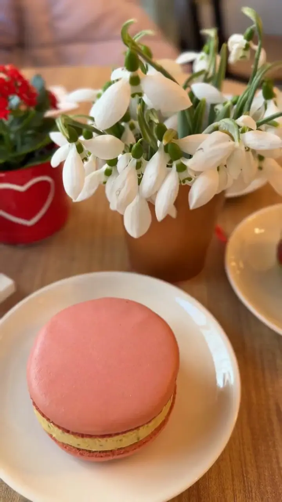
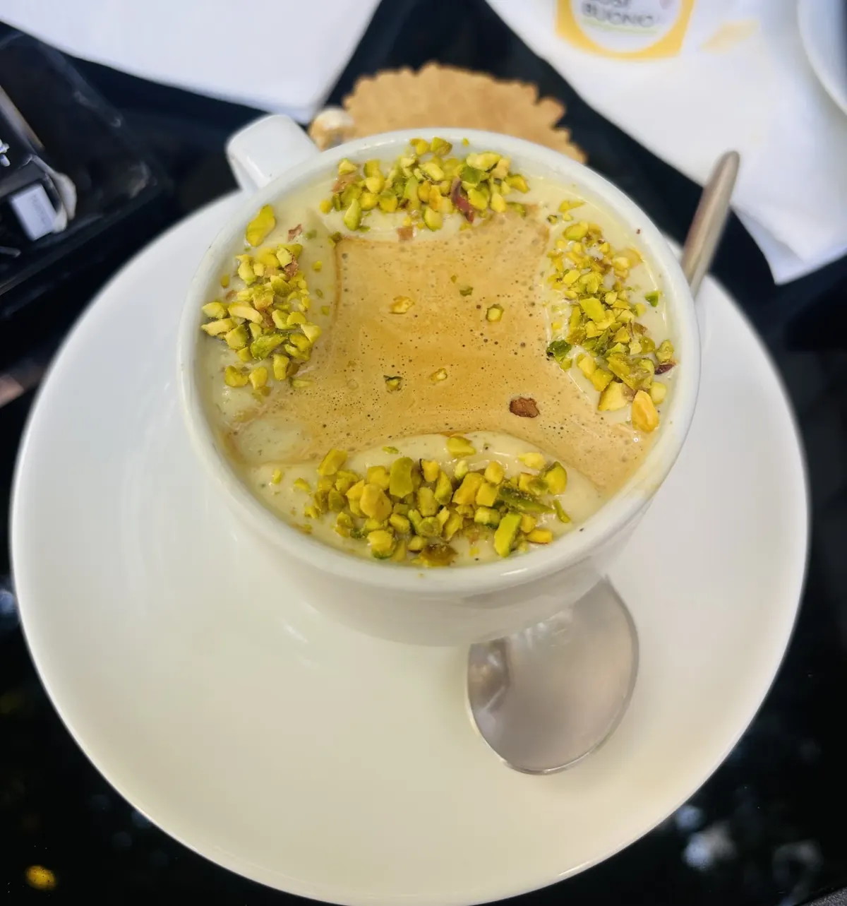
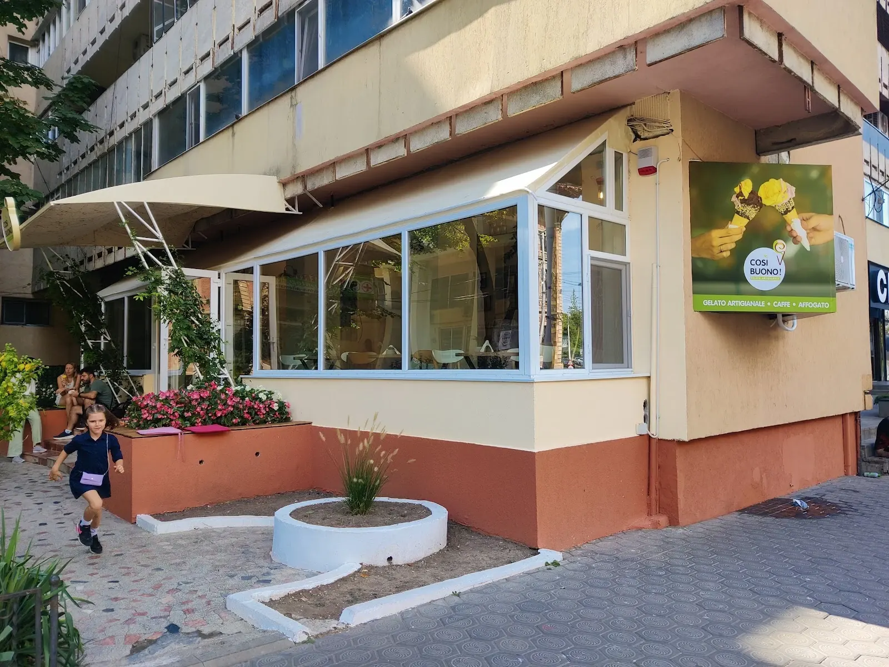
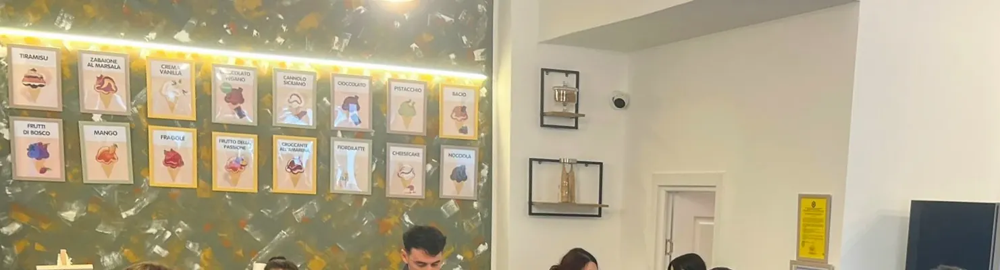
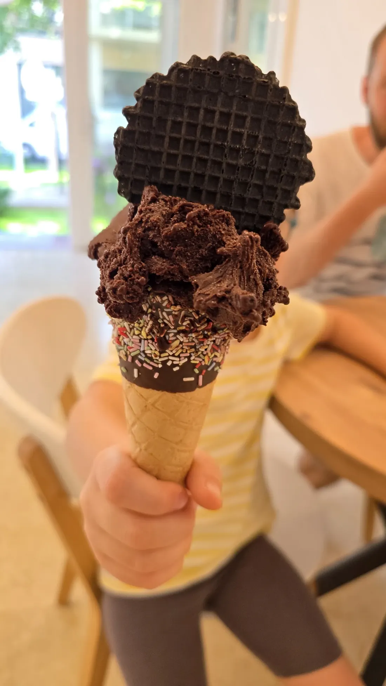
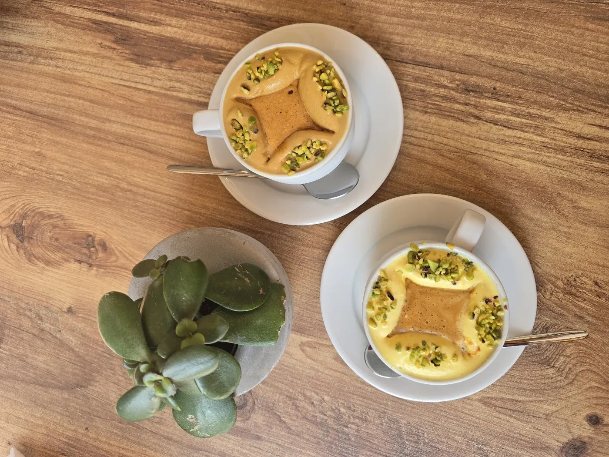
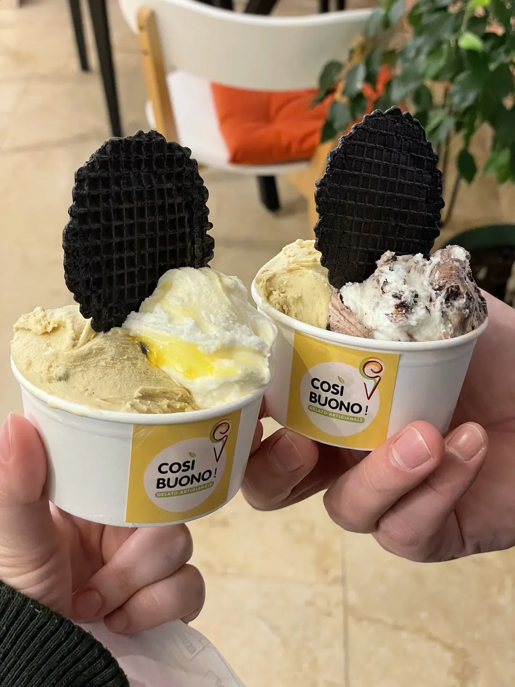
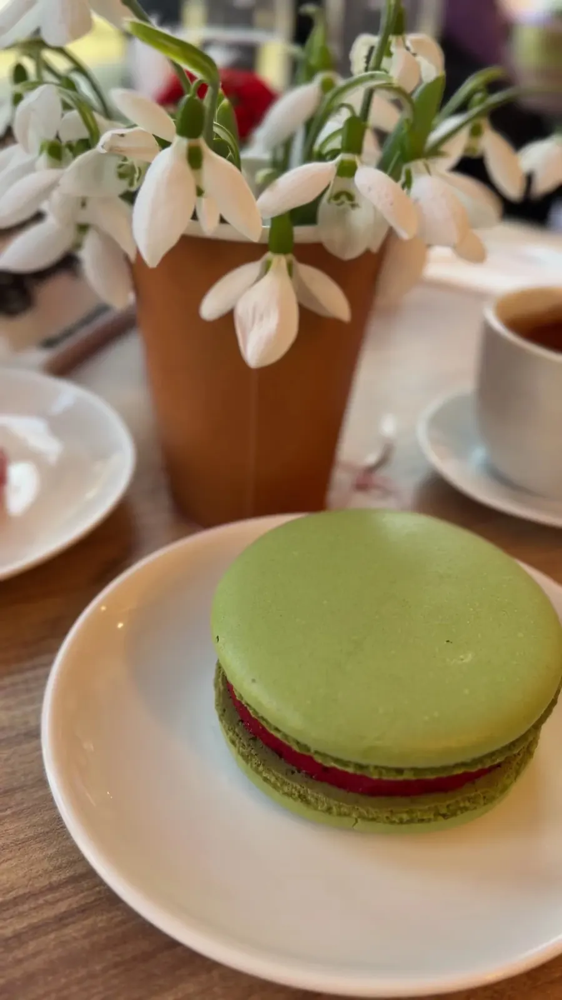
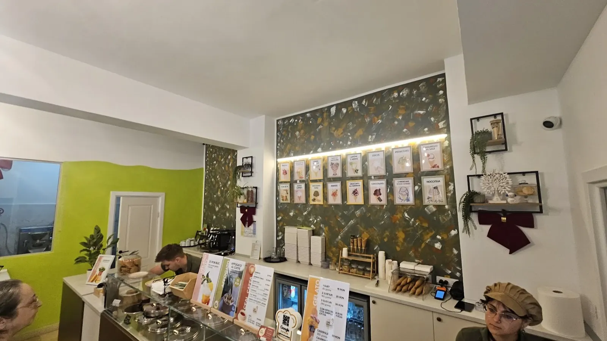
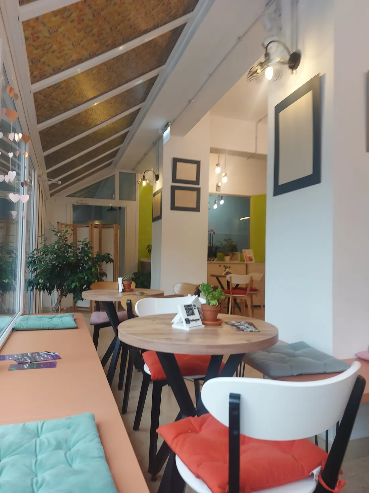

Cosi Buono!{{gelato artizanal, pe Strada Arcu 3|artisan gelato on Strada Arcu 3|gelado artesanal na Strada Arcu 3}}
{{Atinge o cuvă din vitrină.|Tap a tub in the case.|Toca numa cuba da vitrine.}}
{{Spatula face valul, tu alegi aroma. Mănânci aici, la masă, sau iei o cutie acasă — o precomanzi de aici și o ridici la ora ta.|The spatula makes the wave, you choose the flavour. Eat in, or take a box home — order it here and pick it up at your time.|A espátula faz a onda, tu escolhes o sabor. Comes cá, à mesa, ou levas uma caixa para casa — encomendas aqui e levantas à tua hora.}}
{{Din vitrină|From the case|Da vitrine}}
{{Clasicele italiene stau lângă aromele care vin și pleacă. Ce e azi în vitrină afli la tejghea — sau ne suni.|Italian classics sit next to flavours that come and go. Find out what’s in the case today at the counter — or give us a call.|Os clássicos italianos ao lado de sabores que vêm e vão. O que está hoje na vitrine sabes ao balcão — ou ligas-nos.}}
{{Teiul îl uscăm noi|We dry the linden ourselves|A tília secamo-la nós}}
- {{Gelato de tei|Linden gelato|Gelado de tília}}{{Florile de tei pentru rețetă le uscăm chiar noi. E aroma despre care se vorbește cel mai mult.|We dry the linden flowers for the recipe ourselves. It’s the flavour people talk about most.|As flores de tília da receita somos nós que as secamos. É o sabor de que mais se fala.}}
- {{Fisticul|The pistachio|O pistácio}}{{Preferatul multora dintre clienți — în cornet, în cupă sau în ceașcă.|Many customers’ favourite — in a cone, a cup or a coffee cup.|O preferido de muitos clientes — no cone, no copo ou na chávena.}}
- Gelato · caffè · affogato{{Cum scrie pe firmă: cafea, și o bilă de gelato înecată în espresso.|As the sign says: coffee, and a scoop of gelato drowned in espresso.|Como diz a placa: café, e uma bola de gelado afogada em espresso.}}

{{Recenzii|Reviews|Opiniões}}
{{Oamenii scriu despre arome intense, despre oamenii zâmbitori de la tejghea și despre cum Cosi Buono le-a devenit gelateria preferată din Iași.|People write about intense flavours, the smiling faces behind the counter, and how Cosi Buono became their favourite gelato place in Iași.|As pessoas falam de sabores intensos, das caras sorridentes ao balcão e de como a Cosi Buono passou a ser a sua gelataria preferida em Iași.}}
{{Pe Arcu|On Arcu|Na Arcu}}
Strada Arcu 3, Iași
- {{Azi|Today|Hoje}}
- —
- {{Program|Hours|Horário}}
- {{Luni 14–22 · marți–duminică 10–22|Mon 14–22 · Tue–Sun 10–22|Seg 14–22 · ter–dom 10–22}}
- Tel.
- 0741 424 480

{{Vitrina|The case|A vitrine}}
{{Atinge o cartolină ca s-o pui în cutie. Aromele se rotesc: unele sunt mereu acolo, altele apar doar câteva zile.|Tap a card to put it in your box. Flavours rotate: some are always there, others show up for a few days.|Toca num cartão para o pôr na caixa. Os sabores rodam: uns estão sempre lá, outros aparecem só uns dias.}} {{prețuri de confirmat|prices to be confirmed|preços a confirmar}}
{{Toate aromele|All flavours|Todos os sabores}}
{{Mergi la cutie|Go to your box|Ir para a caixa}}

{{Espresso turnat peste o bilă de gelato.|Espresso poured over a scoop of gelato.|Espresso por cima de uma bola de gelado.}}
{{Cafea la masă, în sală sau pe terasă.|Coffee at the table, inside or on the terrace.|Café à mesa, na sala ou na esplanada.}}
{{Le-am văzut la mese, lângă ceai. Dacă sunt azi: întreabă.|You’ll see them on the tables, next to tea. Whether there are any today: ask.|Vêem-se nas mesas, ao lado do chá. Se há hoje: pergunta.}} {{de confirmat|to be confirmed|a confirmar}}
{{Cutia ta|Your box|A tua caixa}}
{{Alegi aromele, cât gelato și când treci pe Arcu 3. Ți se scrie mesajul singur; tu doar îl trimiți. Îți confirmăm noi, cu prețul.|Choose the flavours, how much and when you’ll come by Arcu 3. The message writes itself; you just send it. We confirm, with the price.|Escolhes os sabores, quanto e quando passas na Arcu 3. A mensagem escreve-se sozinha; tu só a envias. Nós confirmamos, com o preço.}}
{{La masă|At the table|À mesa}}
{{Cornete, cupe, ceașca cu fistic și sala cu terasă de pe Arcu.|Cones, cups, the pistachio cup and the room with its terrace on Arcu.|Cones, copos, a chávena de pistácio e a sala com esplanada na Arcu.}}
{{Fotografii|Photos|Fotografias}}






Arcu 3
{{Strada Arcu 3, Iași. Deschis în fiecare zi: luni de la 14, în rest de la 10, până la 22.|Strada Arcu 3, Iași. Open every day: Mondays from 14, otherwise from 10, until 22.|Strada Arcu 3, Iași. Aberto todos os dias: à segunda a partir das 14, nos outros dias a partir das 10, até às 22.}}
{{Program|Hours|Horário}}
{{Telefon|Phone|Telefone}}
0741 424 480{{Livrare la domiciliu, Instagram, Facebook și e-mail:|Home delivery, Instagram, Facebook and e-mail:|Entrega ao domicílio, Instagram, Facebook e e-mail:}} {{de confirmat|to be confirmed|a confirmar}}